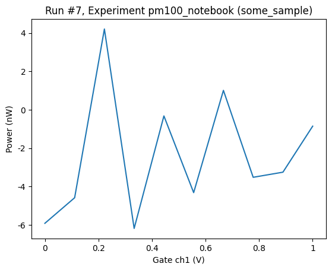

Thor PM100¶
[ ]:
from photonicdrivers.thor_pm100 import PM100
[2]:
pm100 = PM100("pm100", address="USB0::0x1313::0x8078::P0041989::0::INSTR")
[3]:
pm100.get_idn()
[3]:
{'vendor': 'Thorlabs',
'model': 'PM100D',
'serial': 'P0041989',
'firmware': '2.8.1'}
[4]:
pm100.print_readable_snapshot()
pm100:
parameter value
--------------------------------------------------------------------------------
IDN : None
averaging : None (times)
bandwidth : None (nm)
beamdiameter : None (mm)
power : None (W)
power_range : None (W)
power_range_auto : None
timeout : 10 (s)
wavelength : None (nm)
[5]:
print(f"power {pm100.power()} {pm100.power.unit}")
print(f"wavelength {pm100.wavelength()} {pm100.wavelength.unit}")
print(f"beamdiameter {pm100.beamdiameter()} {pm100.beamdiameter.unit}")
print(f"bandwidth {pm100.bandwidth()} {pm100.bandwidth.unit}")
print(f"averaging {pm100.averaging()} {pm100.averaging.unit}")
print(f"power_range {pm100.power_range()} {pm100.power_range.unit}")
print(f"power_range_auto {pm100.power_range_auto()} {pm100.power_range_auto.unit}")
power -3.52373664e-09 W
wavelength 6.000000E+02 nm
beamdiameter 3.0 mm
bandwidth 1.0 nm
averaging 1 times
power_range 1.176184e-05 W
power_range_auto 0
[6]:
from qcodes.dataset import do1d, load_or_create_experiment
from qcodes.tests.instrument_mocks import DummyInstrument
load_or_create_experiment(experiment_name='pm100_notebook')
[6]:
pm100_notebook#some_sample#1@C:\Users\hvx124\experiments.db
-----------------------------------------------------------
1-results-1-dac_ch1-0
2-results-2-dac_ch1,pm100_power-0
3-results-3-dac_ch1,pm100_power-0
4-results-4-dac_ch1,pm100_power-10
5-results-5-dac_ch1,pm100_power-10
6-results-6-dac_ch1,pm100_power-10
[7]:
dac = DummyInstrument('dac', gates=['ch1', 'ch2'])
[8]:
do1d(dac.ch1, 0,1,10,0.11, pm100.power, do_plot=True)
Starting experimental run with id: 7. Using 'qcodes.dataset.do1d'
[8]:
(results #7@C:\Users\hvx124\experiments.db
-----------------------------------------
dac_ch1 - numeric
pm100_power - numeric,
(<Axes: title={'center': 'Run #7, Experiment pm100_notebook (some_sample)'}, xlabel='Gate ch1 (V)', ylabel='Power (nW)'>,),
(None,))
